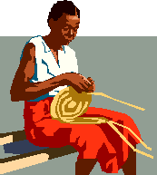

Dicen que Don Nazario tenia todos los años del mundo, que cuando nació, no existía ningún Departamento, que la tierra era de todos, no había cercas, ni nadie tenía horarios ni a nadie le importaba lo que el otro hiciera, solo se trabajaba y se vivía.
Las cosas, según el, eran rebuenas no olían a gasolina ni quemaban tanta gente, no había aparaticos chillones y chismosos, ni había bulla todo el día, para alardear con malas noticias.

Decía, guerra nunca faltara, mientras sea buen negocio y les guste a muchos los uniformes y obedecer sin pensar pero si a uno le gusta otra lucha , hay que tener mejor puntería, aprender a trabajar y descansar cuando a uno le da la gana!
Porque para ganar se tienen que tener hartas ganas. A Don Nazario nadie podía convencerlo de que la modernidad era buena, decía que la tal pantalla embobaba a cualquiera, metía malas ideas y decía muchas mentiras que hacían daño.
.Repetía que lo mejor estaba cerca de cada uno, que en los tiempos de ahora, había un contagio desastroso la gente además de tonta, se volvía medio ciega, sufría de sordera y era más esclava que antes, porque cambiaron de amos, y que para colmo de males, nadie ni se enteraba.
Cuando era joven el había rodado con mucha suerte, buenas mujeres, hijos sanos y había encontrado la palma de Majagua, que era mágica para cubrir bien las cabezas, en donde nacen las calenturas.
El sombrero voltiao refresca las ideas, y ojalá también voltiara las metidas de pata, para saber elegir mejor.
Por eso, lo más importante es proteger las cabezas, al cubrirla hasta puede que comiencen a pensar .
El opinaba que hay que celebrar todos los días estar con buena salud y tener tierrita, ella responde bien si se la cuida,
Tiempo hay para todo, hasta para los engaños, pero si se aprovechaba bien, da para vivir!
Decía: vale la pena si hay gozo, porque si amas lo que haces, nunca será un trabajo, porque cuando se está muerto todo se acaba, ni siquiera así sirve el sombrero voltiao !!!